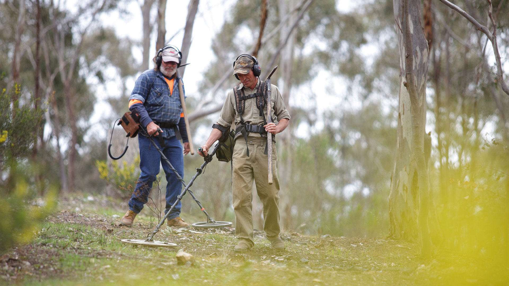

Have you ever imagined the thrill of finding a nugget of gold, glistening in the sunlight, just waiting to be discovered? Picture this: you're wading through a picturesque river, your pan swirling in the water, and suddenly you spot that unmistakable glint. This is the magic of gold prospecting!
Gold prospecting, the search for and collection of gold deposits, is more than just a hobby. It's a journey of exploration, a connection to nature, and a gateway to history. Let's delve into the many reasons why people are drawn to this captivating pursuit:
1. Adventure and Discovery
The sense of adventure is a major draw for many gold prospectors:
- The thrill of the Hunt: Pursuing gold is inherently exciting, with the potential for life-changing discoveries.
- Exploring New Locations: Gold prospecting takes you to diverse and often remote locations, from riverbeds to mountains, offering a unique way to experience the natural world.
- Notable Discoveries: Famous gold rushes and legendary finds have captured the imagination of generations, inspiring countless stories of fortune and adventure.
2. Connection with History and Nature
Gold prospecting offers a unique blend of historical and natural exploration:
- Following in the Footsteps of Legends: Retracing the paths of early prospectors and gold rush pioneers connects you to a rich historical legacy.
- Understanding Geological Processes: Learning about the formation of gold deposits and the forces that shape the Earth enhances your understanding of the natural world.
- Appreciating Natural Beauty: Gold prospecting often takes you to scenic locations, allowing you to immerse yourself in the beauty of nature while pursuing your passion.
3. Educational Benefits
Gold prospecting is a hands-on educational experience that offers:
- Learning Geology and Mineralogy: Identifying different types of rocks, minerals, and geological formations is essential for successful prospecting.
- Historical Insights: Researching the history of gold mining in your area provides a glimpse into the past, revealing stories of hardship, triumph, and the impact of gold on local communities.
- Hands-on Science Education: Gold prospecting is an engaging way to learn about geology, chemistry, and physics in a real-world setting.
4. Physical and Mental Health Benefits
Gold prospecting promotes both physical and mental well-being:
- Physical Exercise: Hiking, digging, and panning for gold provide a healthy workout in the fresh air.
- Stress Relief: Being in nature and focusing on the search for gold can help reduce stress and promote relaxation.
- Mindfulness and Patience: The methodical nature of gold prospecting encourages mindfulness and patience, as you carefully examine each potential find.
5. Community and Camaraderie
Gold prospecting fosters a sense of community and camaraderie:
- Joining Clubs and Groups: Connecting with fellow prospectors through clubs and online forums provides opportunities to learn, share experiences, and participate in group outings.
- Sharing Knowledge and Expertise: Experienced prospectors often mentor newcomers, passing on valuable knowledge and skills.
- Participating in Events: Gold prospecting events and competitions offer a chance to meet other enthusiasts, showcase your finds, and celebrate the shared passion for gold.
6. Hobby and Potential Profit
Gold prospecting can be both a rewarding hobby and a potential source of income:
- Collecting Gold: Building a collection of gold nuggets, flakes, and specimens is a fulfilling hobby in itself.
- Selling Gold: Depending on the quantity and quality of your finds, you may be able to sell your gold for profit.
- Turning a Hobby into a Business: Some prospectors turn their passion into a full-time career, offering guided tours, selling prospecting equipment, or even establishing their own mining claims.
7. Environmental Stewardship
Responsible gold prospecting promotes environmental awareness:
- Minimizing Impact: Ethical prospectors prioritize minimizing their impact on the environment, practicing Leave No Trace principles, and adhering to local regulations.
- Reclamation and Restoration: Some prospectors actively seek to reclaim and restore areas affected by past mining activities.
- Educating Others: Sharing knowledge about responsible prospecting practices helps protect natural resources and preserve the environment for future generations.
8. Economic Opportunities
Gold prospecting can also provide economic benefits:
- Selling Finds: Rare or high-quality gold nuggets can be sold to collectors or museums.
- Jewelry and Art: Creating and selling handcrafted items made from collected gold can be profitable.
- Tourism and Guided Tours: Leading prospecting tours can be a viable business, especially in regions with rich gold deposits.
Are You Ready to Embark on Your Golden Adventure?
If you're seeking adventure, a connection to history and nature, and the thrill of discovery, gold prospecting might be the perfect pursuit for you. It's a hobby that can be enjoyed by people of all ages and backgrounds, whether you're a casual weekend prospector or a dedicated enthusiast.
Ready to get started? Here are a few tips to embark on your gold prospecting journey:
- Research: Learn about the geology of your area and the types of gold deposits you might find. See our map>>
- Join a Club: Connect with other prospectors in your community to learn from their experience and participate in group outings.
- Gear Up: Invest in essential tools like a gold pan, sluice box, metal detector, and appropriate safety gear. See Recommended Gear>>
- Respect the Environment: Practice ethical prospecting, minimize your impact, and adhere to local regulations.
- Have Fun! Embrace the spirit of adventure and the thrill of the hunt that makes gold prospecting such a rewarding experience.
Gold prospecting is more than just a hobby; it's a journey of discovery, a connection to the past, and a chance to experience the timeless allure of gold. So, grab your gear, head outdoors, and start exploring the hidden treasures that lie beneath your feet. Who knows, you might just strike gold!